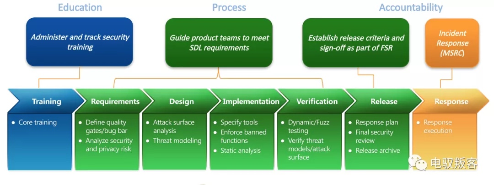
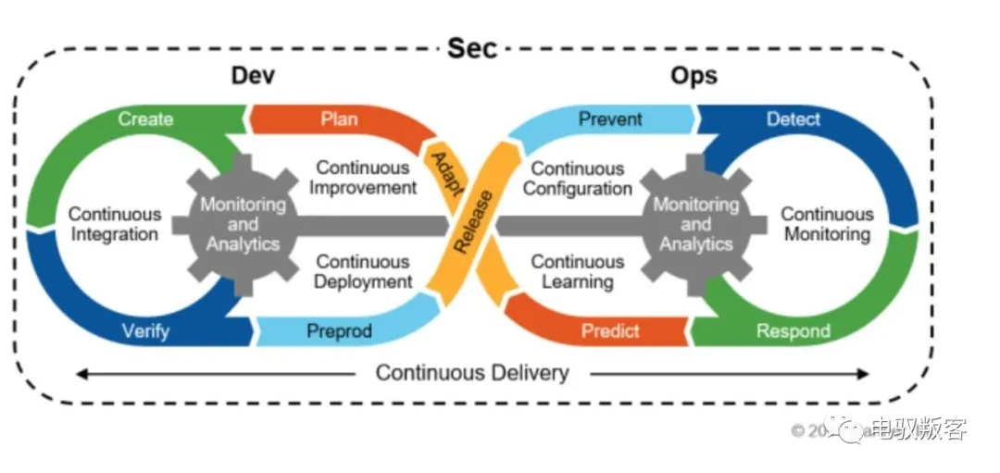
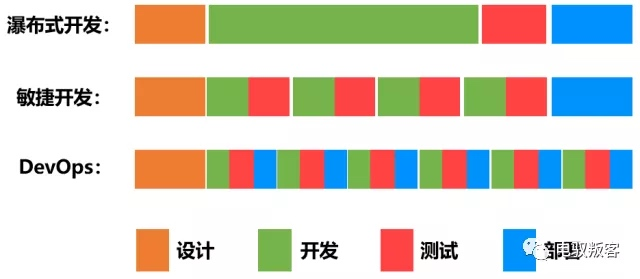
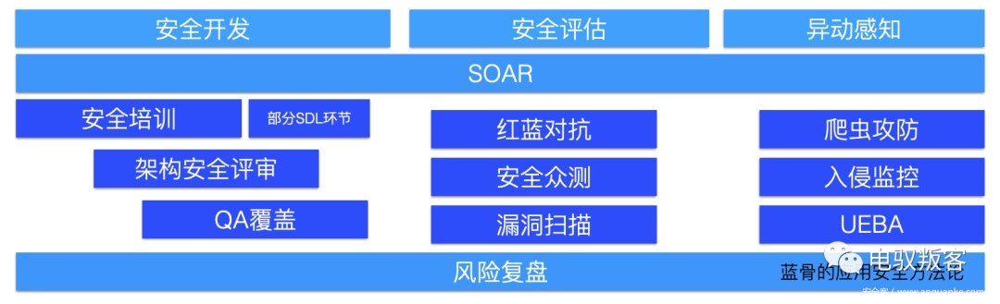

在2020即将结束之际，将自己对于应用安全建设的一些思考记录成此文，与诸位探讨未来的应用安全之路，一家之言，不要当真
在前几年，各种文章/会议，每当提起应用安全，PPT总会出现类似的这张图

这几年又都换上了这张图

仿佛用原来的那些安全能力，照着DevSecOps的流程重新画一个图，就可以将原先解决不了的难题解决掉，但真的是这么简单吗？
一、应用安全困境
经常看到某些安全公司各种画大饼，说网络安全从业缺口xxx万，听起来这个行业仿佛是个蓝海，但实际上，哪个公司会去雇用这么多的安全工程师呢？在一二线互联网公司，“应用安全工程师:开发工程师=1:500”应该是个很常见的比例，甚至有些公司会更高，攻防只会是工作中的极少部分，更多的则是“柴米油盐”。
在应用的开发速度上，也和以前有了很大的变化，商业环境的瞬息万变，促使其要不断的、快速的开发新应用来支撑新的业务，例如社区团购、全民买菜等，需要在很短的时间内上线，并且要不断的进行迭代，应用的运行环境也发生了很大的变化，Web、APP、小程序、云原生等等。

简单总结一下现在遇到的困境：应用数量、场景的快速增加、功能迭代周期短，原来的SDL流程无法融入到新的开发模式中，致使很多风险发布到线上才被发现或直到被利用还没有感知。
在笔者这几年参与应用安全建设的过程中，对其有着很深刻的感触，很多时候，面对那么多的应用，那么多的风险，深深的无力感。
出现问题的时候，其他人总是会问或者扪心自问，这个风险出现的原因是什么？为什么没有提前发现？后续可以覆盖到吗？现在或许可以试着回答一下这个问题。
二、我认为的应用安全发展趋势
经过这几年的实践总结，在这里和大家探讨下如何“困境突围”。
首先，对于DevSecOps，其中的很多观点笔者是比较认同的，但是和很多人的认知不一样的地方是，更多的是将其视作一个方法论，就像SOAR、UEBA等一样，而不是其一个执行框架。在SDL的阶段，很多人在衡量应用安全建设完成度的时候，会将每个环节是否都覆盖作为其标准，但这显然是一个伪命题，100%的覆盖度在现实中是不存在的。
在笔者看来，应用安全的发展趋势有这么三点：
1、业务、产品、开发、测试、安全五者之间合作关系的转变，所有人都要为应用安全负责；
2、安全风险的发现要融入到“开发-测试-部署”的流程中去，在上线前发现风险；
3、安全自动化(安全运营可持续化、安全流程自动化、风险感知自动化)。
单从这几个观点来看，似乎和DevSecOps中的某些观点有相似之处，事实也确实如此，但是需要再强调一遍，DevSecOps更多的是一种方法、一种思想，我们可以学习其长处，切不可照猫画虎。
三、我对现在SDL中一些流程的看法
在讲笔者是如何讲上述三个观点落地之前，先谈一下笔者对其现在SDL流程中一些大家都在做的流程的看法：
1、应用安全/安全开发/安全意识培训时讲漏洞类型(OWASP Top10等)是一种低效的行为；
根据笔者培训的经验来看，真实的case是直击人心且令人印象深刻的，用一个小时讲实际中漏洞类型，特别是XSS、CSRF等，会使听众昏昏欲睡。这里不是说安全培训不重要，恰恰相反，安全培训是提升开发安全意识的一个重要手段，关键是面对不同的人群针对性的去选择培训素材和培训方式，如果能达到“开发主动来咨询安全解决方案”的效果，那培训便算得上是成功的。
2、强制性的流程卡点是一种偷懒的行为；
做安全运营的同学往往有种思维惯性，希望在所有环节都做上卡点，这种行为/想法是非常不利于合作关系转变的。换位思考下，谁希望每一步操作都要受到阻碍，与开发效率提升相背而行。
四、我的应用安全方法论
回到正题，对于应用安全的建设，笔者是如何探索落地的呢？下边一一道来。
首先，我们要清楚，应用漏洞的种类那么多，在大公司，要保护大量应用、海量数据的安全，最应该解决的是哪几种风险呢？
1、数据批量泄漏的风险；
2、权限管控不完善的风险；
3、命令执行/SQL注入/服务器接管等高危漏洞的风险。
或许这里会有人提到监管风险，例如网络安全法、GDPR、等保等，因其往往属于安全合规或数据安全的范畴，且不在笔者的认知范围内，这里暂且不提。
理清了关键风险，那么怎么做就会更清晰一点了，笔者讲其方法论归纳为三个环节来谈，分别是：
1、应用安全开发：在漏洞代码上线前发现风险；
2、应用安全评估：通过红蓝对抗、安全众测、漏洞扫描等发现已上线的漏洞；
3、应用异动感知：高危/核心应用的异动监控、感知。

第一点：应用安全开发
我们的目标是尽可能的避免存在漏洞(特别是高危漏洞)的代码发布到线上。
这里笔者将漏洞分为常规漏洞(SQLI、XSS、SSRF等)、业务逻辑漏洞(越权漏洞、短信爆破等)两类。
常规漏洞：这类风险就依赖安全开发框架、DAST、IAST、RASP等等安全工具了，工具链越完善，该类漏洞就会越少，这本就是安全专业范围内的事情，本文就不展开讲了。
业务逻辑漏洞：现在不管哪家的SRC，收到的高危漏洞中，越权漏洞一定是占比最大的部分，至今也没有看到一个运营成本低、误报率低的越权类漏洞扫描器的出现。其实这个也可以理解，前几年笔者也试图去开发一个越权扫描器，但是效果却不如想象中的美好，究其原因就是，业务形态的多变、开发风格的不同，导致了越权漏洞表象上大多一样，原理逻辑上却大相径庭，这也就是现在基于流量重放的越权扫描器效果相对好一些的原因所在。
既然越权扫描器解决不了全部的业务逻辑类漏洞，那么试着去改变一下生产关系呢？业务、产品、开发、测试、安全五者之间合作关系的转变，所有人都要为应用安全负责。
解决业务逻辑漏洞的方法笔者将其拆解为三个动作：架构安全评审、QA覆盖、风险复盘。
I. 架构安全评审
为什么要做架构评审呢？原因可以参见这篇文章微服务架构下的越权风险，开发方式、开发架构的转变，出现了很多类Gateway的应用，这些应用的架构如果没有安全参与评估，往往会导致整个系统出现框架性的权限失效，且修复起来难度极大。
这里要注意的是，不是所有应用都要去参与架构安全评审，不然很容易又陷入到“人力配比”的困境中去，根据实际情况来选择评审策略。
II. QA覆盖
QA环节的人力往往是充裕的，并且会将覆盖所有的发布和迭代，那么试想一下，如果测试同学帮我们做一部分安全测试的工作，那岂不是既可以大幅提高覆盖度，又可以将安全的经历集中到其它环节。
那怎么去做呢？第一，要清楚业务逻辑类漏洞，既是漏洞、又是BUG，达成共识的关键；第二，测试同学不是专业的安全，所以不可能覆盖所有的漏洞类型，要有选择的有的放矢，侧重于越权等风险类型；第三，那就是风险复盘了。
III. 风险复盘
即使前边经过了各种评审和测试，一定还会有漏洞被发布到线上，这时候就要进行深度的风险复盘，复盘的目的是什么呢？找出漏洞出现的根本原因，如果是应用架构有问题，那便拉项目，改架构，如果是人的问题，那便要思考下安全意识的问题了。至于哪些风险需要复盘，这个则要根据当前的安全形势，有选择性的去复盘。其中一个关键点就是，开发、产品、测试都要参与到复盘中去。
第二点：应用安全评估
红蓝对抗、安全众测、漏洞扫描等详细的流程本文也就不展开说了，有非常多的文章介绍这些方面，笔者着重谈一下该环节的重要性。
安全评估环节相当于是一个查漏补缺，检验安全开发环节效果的作用，要同黑灰产进行时间竞赛，力争先于他们发现风险。
该阶段发现的风险，每一个风险都是投入了非常多人力、物力、财力换来的，要充分的利用其价值，而不是修复了事。
每一个通过该环节发现的高危风险，都应该与“风险复盘”进行闭合，深入其中发现出现风险的根本原因。
第三点：应用异动感知
笔者根据应用安全中的风险，将异动感知划分为三个部分，分别是：爬虫攻防、漏洞利用、非漏洞性数据泄漏。
I. 爬虫攻防
说起爬虫攻防，笔者真是一把辛酸泪，在面对海量的流量时，如何准确的区分机器流量和正常流量就已经是一件很困难的事情了，如果在机器流量中快速准确的发现爬虫流量，特别是高级爬虫，是非常有挑战的一项工作。每个公司有不同的爬虫对抗平台，或者是选择爬虫风险管理，此处笔者不再赘述。
II. 漏洞利用
此处“漏洞”更多指的是“命令执行/SQL注入/服务器接管等高危漏洞”，特别是近几年，供应链漏洞频发，在应用安全中，一旦没有有效的全覆盖的推动供应链漏洞修复，则极有可能被外部利用攻击，那我们该怎么办呢？常见的感知方法有两个，分别是：蜜罐、WAF，当然有些团队会基于各种流量日志构建攻击检测平台，检测各种payload，以达到在漏洞被利用时快速发现的目的，笔者因没有构建过类似系统，更多的是使用，所以细节相关的就不多讲了。
III. 非漏洞性数据泄漏
“非漏洞性数据泄漏”怎么理解呢？讲一个场景，例如某个客服的账号被盗用，然后将该客服权限下的数据批量盗取，那这种风险如何避免呢？有些同学可能会认为这不是应用安全的范畴，但实际上，只要是从应用上泄漏的数据，都是属于应用安全该去防护的范围。
这里笔者推荐的方法是UEBA(获取多个维度的行为数据、日志，将其通过基础分析方法、高级分析方法，进行建模分析，识别异常行为的风险用户和风险实体，然后通过打分评级的方式输出告警，使安全工程师可以优先级处理告警)，针对不同的高风险敞口进行监控。目前市面上也有不少基于UEBA方法论的产品落地，各家公司内部也或多或少会有类似实现，分析算法都已经很成熟了，更多的还是根据不同的业务场景制定不同的策略。
本文没有像其它介绍企业安全建设的文章那样将方方面面都讲到，主要集中在应用安全的视角，来探讨如何保证应用的安全。上述提到的很多个点可能看起来有点独立，其实并非如此，因为还有一个方法论没有提到，那就是SOAR，可参看从SOAR中求解应用安全建设强运营突围之法，将各个环节自动化的进行编排，使安全能在整个DevOps流程中游刃有余。如果只是将SOAR看作是一个有控制台拖拖拽拽的样子，那就有些狭隘了。
有许许多多的方法论，许许多多的安全建设的文章，但“听过很多道理 却依然过不好这一生”，每个公司的实际情况都不一样，如一味的追求方法论的完成落地，往往很难取得很好的效果。应用安全建设之路在何方？路在脚下。
[1]文中部分图片来源自网络
[2]文中部分参考文章链接来源公众号：电驭叛客
本文由 蓝骨
创作，采用 知识共享署名4.0 国际许可协议进行许可
本站文章除注明转载/出处外，均为本站原创或翻译，转载前请务必署名
最后编辑时间为: 2021-07-16T22:17:13+08:00